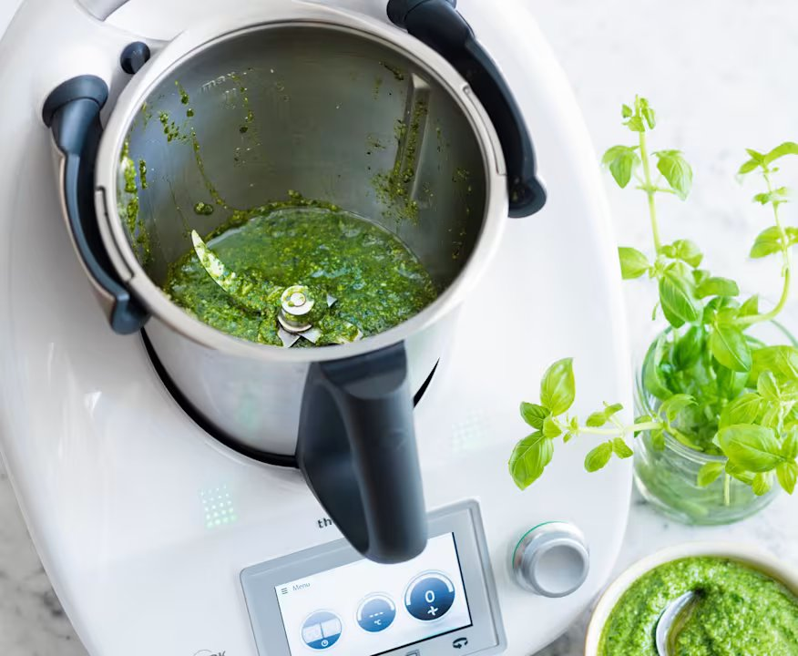

Pesto classique au basilic
Ingrédients
1×
- 1 gousse d'ail
- 30 g de parmesan
- 35 g de pignons de pin
- 50 g de basilic frais
- 100 g d'huile d'olive

Préparation
Étape 1
Mixer 1 gousse d'ail dégermée et 30 g de parmesan en dés Turbo/2 sec, racler, puis à nouveau Turbo/2 sec.
Étape 2
Ajouter 35 g de pignons de pin, 50 g de basilic frais et la moitié de 100 g d'huile d'olive. Mixer 3 sec/vitesse 8 deux fois, en raclant entre les deux.
Étape 3
Ajouter le reste d’huile et mixer 10 sec/vitesse 8 deux fois, en raclant entre les deux.
Conseils
- Se conserve 10 jours au réfrigérateur ou 1 mois au congélateur.
- Variante roquette-amandes : oignon frais au lieu de l’ail, pecorino, amandes et roquette.
Résumé
1 gousse d'ail
30 g de parmesan
Mixer Turbo/2 sec Turbo/2 sec
35 g de pignons de pin
50 g de basilic frais
100 g d'huile d'olive
Mixer 3 sec/vitesse 8
mixer 10 sec/vitesse 8